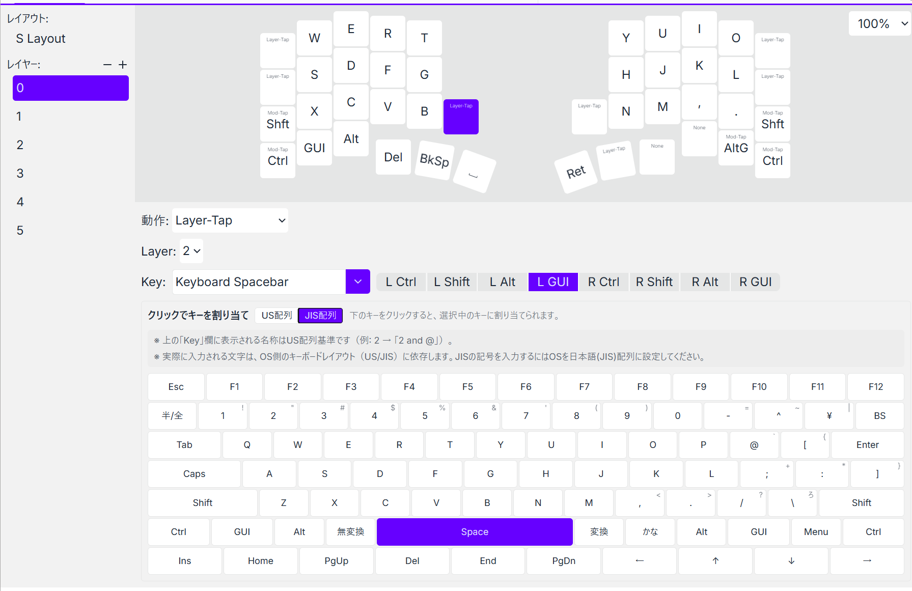
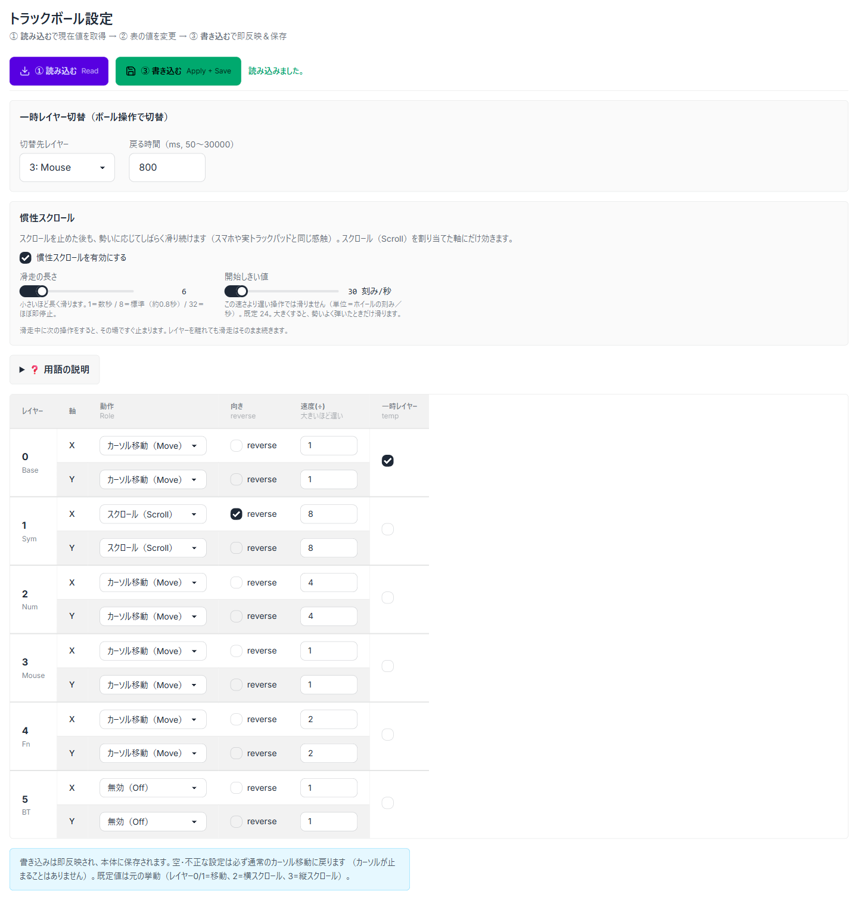
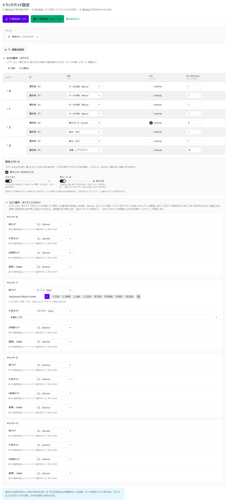
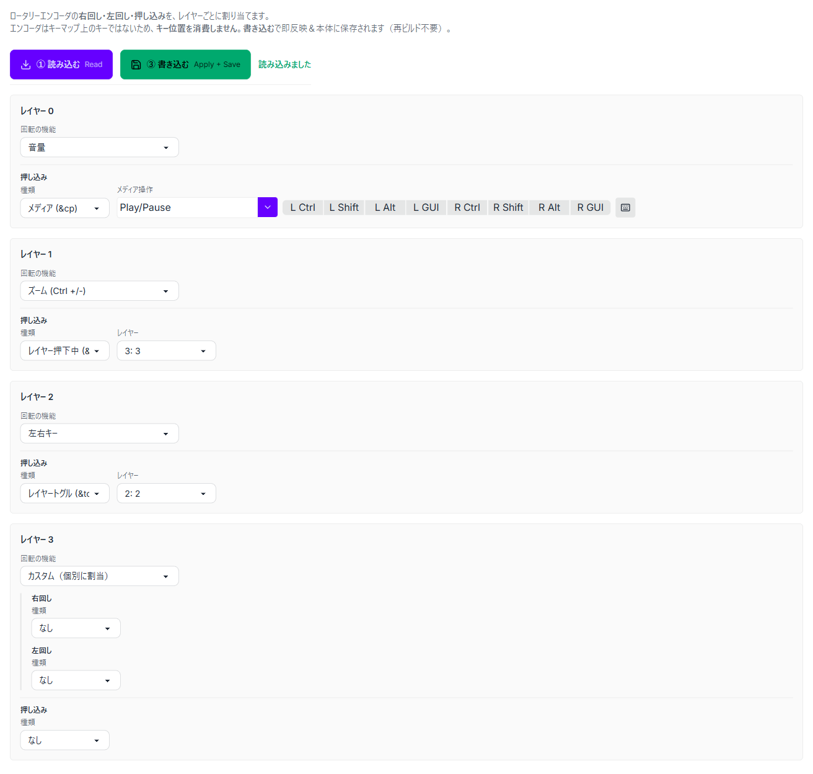
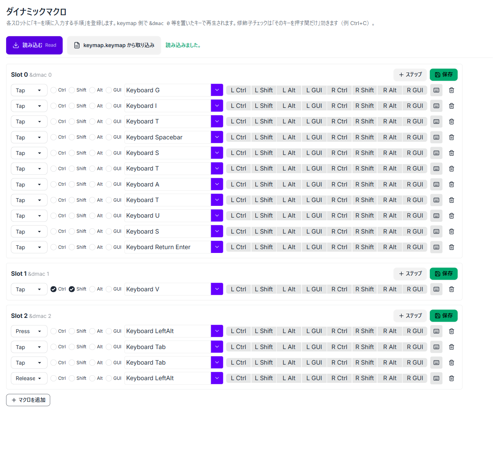
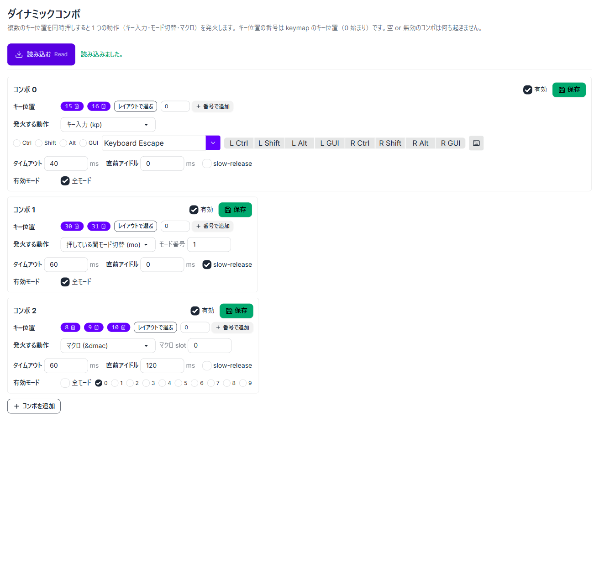
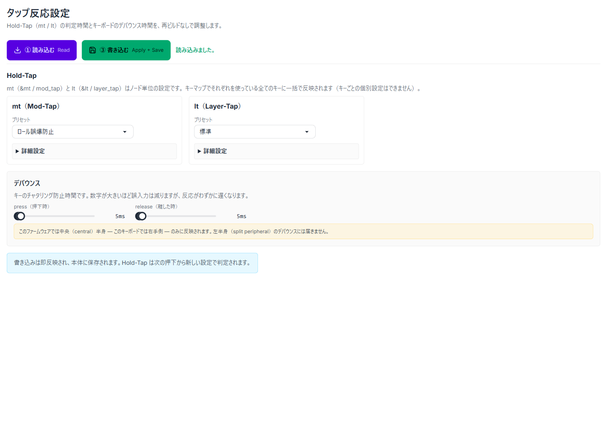
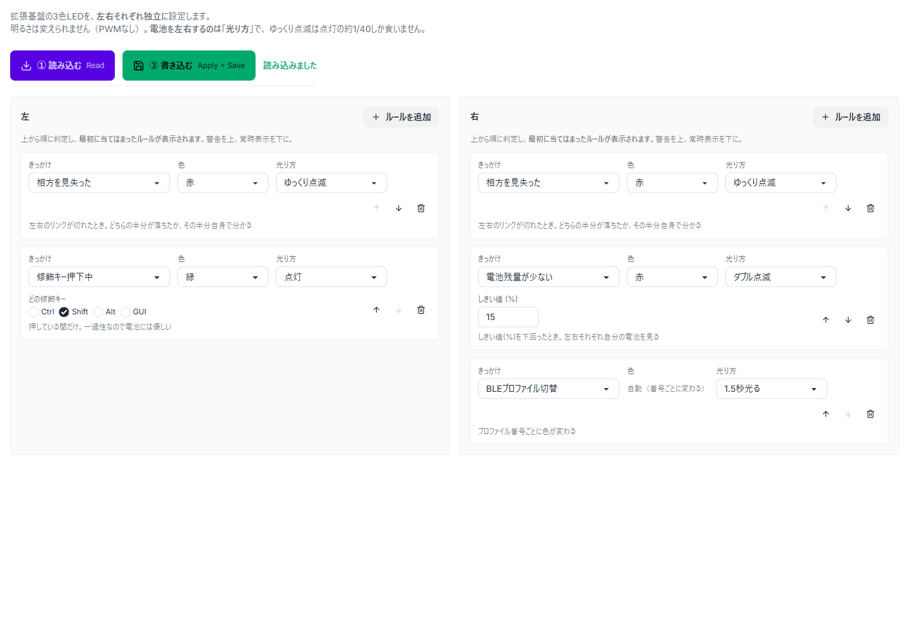
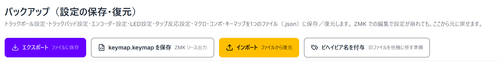
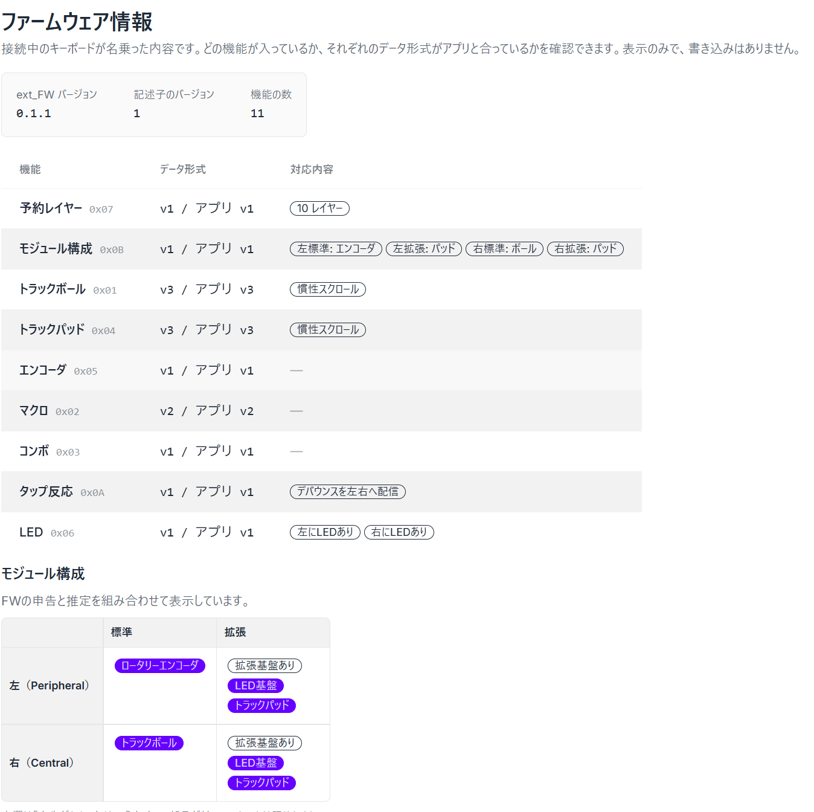

Torabo-Studio タブ別機能紹介
接続すると、そのキーボードのファームウェアが対応している機能のタブだけが表示されます。 どのタブも設定は BLE 経由で即反映・本体に保存され、再フラッシュは不要です。 キーマップ以外のタブは torabo-tsuki_ext_FW の該当スニペットを含めた拡張ファームウェアが前提です。 タブは全部で 10 個あり、日々の設定を触る「編集」（キーマップ〜LED）と、 キーボード全体を扱う「管理」（バックアップ・FW情報）の2グループに分かれています。 画面の表示言語は日本語 / English を切り替えられます。
キーマップ
標準キーボードを表示してキーボード選択で入力できます。JIS利用向けにJISでの設定も可能にしています。 実際に入力される文字は OS 側のキーボードレイアウト設定（US/JIS）に依存します。
キーキャップの刻印も見直しました。レイヤーキー（<）やモッドタップ（&mt）は、
押しっぱなしにしたときの動作をキーの上側に、単押しで入力される文字をキーの中央に表示します。
マクロを呼ぶキーはスロット名（名前を付けていなければ M0〜）で表示されます。
刻印の並びは US / JIS を切り替えられます（既定は US）。
{kind=link}

クリックで原寸表示（JIS 配列表示に切り替えた状態）
トラックボール
レイヤー×軸（X/Y）ごとに、ボールの動きへ「カーソル移動／スクロール／無効」と速度・向きを割り当てます。 ボールを動かすと一時的にマウス用レイヤーへ切り替わる「一時レイヤー（オートマウス）」と、 スクロールを止めた後も勢いに応じて滑り続ける慣性スクロールが設定可能です。
{kind=link}

クリックで原寸表示
トラックパッド
レイヤーごとに、なぞる操作（スワイプ）の横方向・縦方向へ「カーソル移動／スクロール／音量／明るさ」などを割り当てます。 たたく操作（単タップ・ダブルタップ・2本指タップ・長押し）への動作割り当てと、慣性スクロールが設定可能です。
{kind=link}

クリックで原寸表示
エンコーダ
ロータリーエンコーダの右回し・左回し・押し込みを、レイヤーごとに割り当てます（音量・ズーム・左右キー・カスタムなど）。 押し込みについては動作が検証できていません。
{kind=link}

クリックで原寸表示
マクロ
ファームウェア更新不要でマクロの設定が可能です。 既存 keymap ファイルからの取り込みにも対応しています。
{kind=link}

クリックで原寸表示
コンボ
マクロと同様です。こちらは私がkeymap editor でコンボを作っていなかったので、keymap上の登録内容が不案内なため、keymapからのインポート機能は作っていません。
{kind=link}

クリックで原寸表示
タップ反応
Hold-Tap（&mt / <）の判定時間と、キーボードのデバウンス時間を再ビルドなしで調整します。 プリセット（標準／ロール誤爆防止など）を選ぶだけでも使え、詳細設定で個別パラメータも詰められます。
作った理由：Mod-Tap の Shift が速いタイピングで誤認識され、意図せず大文字が入力されてしまうのを、 ビルドし直さずにその場で判定時間を調整して追い込めるようにするためです。
{kind=link}

クリックで原寸表示
LED
拡張基盤の3色 LED を、左右それぞれ独立にルールベースで設定します。 「相方（もう半分）を見失った」「電池残量が少ない」「修飾キー押下中」「BLE プロファイル切替」などのきっかけに、 色と光り方（点灯・ゆっくり点滅・ダブル点滅など）を割り当て、上から順に最初に当てはまったルールが表示されます。
{kind=link}

クリックで原寸表示
バックアップ
拡張した機能の設定内容や、他の機器に同じ設定を移すために作成しました。
エクスポート・インポートに加えて、keymap.keymap を保存（ZMK ソース出力）と、ビヘイビア名を付与（旧ファイルを他機に移す準備）にも対応しています。
他の機種へインポートする際は、意図した反映にならない可能性があるので、必ず、インポート前にバックアップを取得してください。
{kind=link}

クリックで原寸表示（エクスポート・インポートに加えて、ZMK ソース（keymap.keymap）の書き出しと、旧ファイルへのビヘイビア名付与）
FW情報
接続したキーボードが名乗った内容（ファームウェアの自己申告）を表示します。拡張ファームウェアのバージョン、 入っている機能の一覧、機能ごとのデータ形式がアプリ側と合っているか、 左右それぞれの標準FFC・拡張FFC に何が付いていると申告されているか（モジュール構成）を確認できます。 表示するだけのタブで、書き込みはありません。届いた生データもそのまま並べられるので、 うまく動かないときの報告に添えられます。
作った理由：どのタブが出るかは、この申告内容で決まります。出てくるはずのタブが見当たらないときに、 ファームウェアにその機能が入っていないのか、読み取れていないだけなのかを切り分けられるようにするためです。
{kind=link}

クリックで原寸表示（FW が名乗る機能一覧とデータ形式、左右×標準/拡張のモジュール構成を表示・読み取り専用）